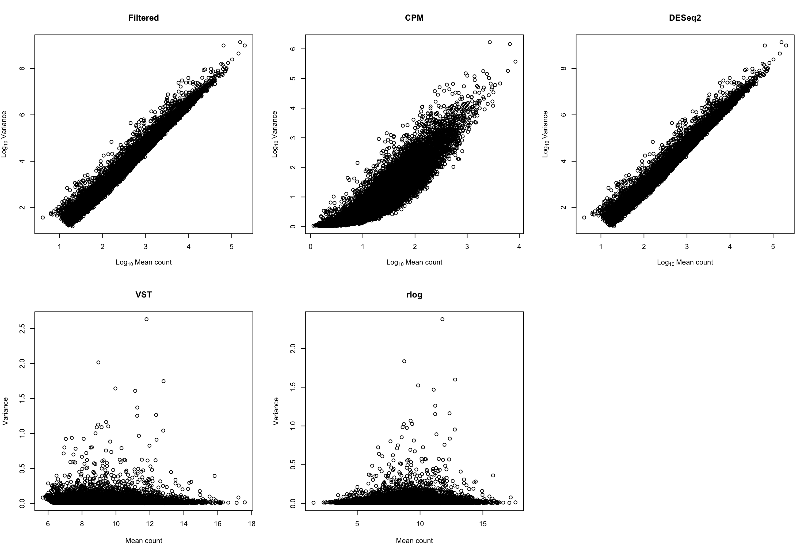

Chapter 5 PRJNA636173
Title: Experimental and natural evidence of SARS-CoV-2 infection-induced activation of type I interferon responses (human)
Paper: (Banerjee et al. 2021)
NCBI project link: https://www.ncbi.nlm.nih.gov/bioproject/PRJNA636173
Overall design: We infected triplicated human lung epithelial cells (Calu-3) at a multiplicity of infection (MOI) for SARS-CoV-2 of 2, with comparison to triplicated uninfected controls. One hour post infection, the inoculum was removed and the clock was set to zero. We extracted and sequenced poly-A enriched RNA at 0, 1, 2, 3, 6 and 12 hours post infection (hpi) using an Illumina HiSeq 2500 with 2 x 50 bp chemistry to a minimum of 21.9 million clusters per replicate. Paired-end sequencing reads were mapped to the human reference transcriptome (GRCh37.67)
5.1 Some experiment info
5.1.1 Time series aspects
- Host type: human lung epithelial cells (Calu-3)
- Sample points: 0, 1, 2, 3, 6 and 12 hours post infection (hpi)
- Groups: infected & uninfected
- Biological replicates: 3
- Total samples: 36
5.1.3 Samples
Samples analyzed:
SRR11884692 SRR11884693 SRR11884694 SRR11884695 SRR11884696 SRR11884697 SRR11884698 SRR11884699 SRR11884700 SRR11884701 SRR11884702 SRR11884703 SRR11884704 SRR11884705 SRR11884706 SRR11884707 SRR11884708 SRR11884709 SRR11884710 SRR11884711 SRR11884712 SRR11884713 SRR11884714 SRR11884715 SRR11884716 SRR11884717 SRR11884718 SRR11884719 SRR11884720 SRR11884721 SRR11884723 SRR11884724 SRR11884725 SRR11884726 SRR11884727
5.2 Preprocesing considerations
Host: Human
- Reference used: hg19 (GRCh37) genome assembly
wget https://ftp.ebi.ac.uk/pub/databases/gencode/Gencode_human/release_39/GRCh37_mapping/GRCh37.primary_assembly.genome.fa.gz
wget https://ftp.ebi.ac.uk/pub/databases/gencode/Gencode_human/release_39/GRCh37_mapping/gencode.v39lift37.annotation.gtf.gz
5.2.1 Cleaning process
Ran in SLURM. The minlength set for this experiment was 40.
sbatch clean_wbbduk.sh SRR_listAcc_PRJNA636173.txt
#!/bin/bash
#clean_wbbduk.sh
#SBATCH --job-name=clean
#SBATCH --partition=short
#SBATCH --ntasks=1
#SBATCH --cpus-per-task=32
#SBATCH --mem=30gb
#SBATCH --time=1-00:00:00
#SBATCH --output=clean_%j.log
<< "clean_wbbduk.sh"
For each sample in fq_dir:
- Clean the fq.gz with bbduck.sh
MJ
2022/02/21
clean_wbbduk.sh
# paths
samples=$1
adapters="/storage/evsysvir/TimeSeries/references/adapters.fa"
fq_dir="/storage/evsysvir/TimeSeries/PRJNA636173/raw_data"
clean_dir="/storage/evsysvir/TimeSeries/PRJNA636173/clean_data"
qc2_dir="/storage/evsysvir/TimeSeries/PRJNA636173/QC2"
minlength=40
while read sample
do
echo "****************** PROCESSING $sample ******************"
bbduk.sh \
in1=${fq_dir}/${sample}_1.fastq \
in2=${fq_dir}/${sample}_2.fastq \
out1=${clean_dir}/${sample}_clean_1.fq.gz \
out2=${clean_dir}/${sample}_clean_2.fq.gz \
ref=${adapters} \
ktrim=r k=21 mink=11 \
qtrim=r trimq=10 maq=5 minlength=$minlength
done < $samples5.3 Alignment vs complete genome with STAR
We are going to align versus the complete genome, not the transcriptome (option used in the original paper). The reason is that we want to do allways the same process and for A. thaliana there are not a good transcriptome available (for C. elegans I don’t know yet).
- Building index (careful with this!):
Interactively in garnatxa (The process is high memory consuming and in that way can’t finish the process)
path\to\STAR --runThreadN 6 \
--runMode genomeGenerate \
--genomeDir genome_hg19_index \
--genomeFastaFiles /storage/evsysvir/TimeSeries/references/genome_hg19_index/GRCh37.primary_assembly.genome.fa \
--sjdbGTFfile /storage/evsysvir/TimeSeries/references/genome_hg19_index/gencode.v39lift37.annotation.gtf \
--sjdbOverhang 50 # readlength-1Necessary to run in SLURM:
#!/bin/bash
#generateIndex2STAR.sh
#SBATCH --job-name=generateIndex2STAR
#SBATCH --partition=long
#SBATCH --ntasks=1
#SBATCH --cpus-per-task=32
#SBATCH --mem=200gb
#SBATCH --time=1-00:00:00
#SBATCH --output=generateIndex2STAR_%j.log
<< "generateIndex2STAR"
In some cases (large genomes), we need a lot of memory to generate the index
needed to align with STAR.
Use:
arg1 = path to genome.fasta
arg2 = path to genome.gtf
arg3 = max(readlength) - 1
arg4 = path to the output directory
generateIndex2STAR
genomeFasta=$1
genomeGTF=$2
length=$3
outDir=$4
STAR="/home/maolu/programs/STAR-2.7.9a/bin/Linux_x86_64/STAR"
$STAR --runThreadN 32 \
--runMode genomeGenerate \
--genomeDir $outDir \
--genomeFastaFiles $genomeFasta \
--sjdbGTFfile $genomeGTF \
--sjdbOverhang $length- Alignment + markDuplicates + remove duplicates (keeping the dedup file too):
In slurm as a batch
#!/bin/bash
#map&dedup.sh
#SBATCH --job-name=map+dedup
#SBATCH --partition=long
#SBATCH --ntasks=1
#SBATCH --cpus-per-task=32
#SBATCH --mem=100gb
#SBATCH --time=10-00:00:00
#SBATCH --output=map+dedup_%j.log
<< "mapdedup"
For each sample in SRR_acc_list:
- Align paired end reads to the complete genome with STAR
- Mark duplicates with gatk4 (need to activate env)
- Generate a copy of bam files without duplicates
MJ
2022/02/21
mapdedup
samples=$1
dir_genome="/storage/evsysvir/TimeSeries/references/genome_hg19_index"
clean_dir="/storage/evsysvir/TimeSeries/PRJNA636173/clean_data"
dir_alignments="/storage/evsysvir/TimeSeries/PRJNA636173/alignments"
dir_dedup="${dir_alignments}/dedup"
dir_nodup="${dir_alignments}/nodup"
dir_dedup_metrics="${dir_alignments}/metrics"
gatk="/home/maolu/programs/gatk-4.2.2.0/gatk"
STAR="/home/maolu/programs/STAR-2.7.9a/bin/Linux_x86_64/STAR"
while read sample
do
# Align vs complete genome hg19
$STAR --runThreadN 12 \
--genomeDir $dir_genome \
--readFilesCommand gunzip -c\
--readFilesIn ${clean_dir}/${sample}_clean_1.fq.gz ${clean_dir}/${sample}_clean_2.fq.gz \
--outFileNamePrefix ${dir_alignments}/${sample}_ \
--outSAMtype BAM SortedByCoordinate \
--outSAMunmapped Within \
--outSAMattributes NH HI NM MD AS
# Mark duplicates
$gatk MarkDuplicates \
-I ${dir_alignments}/${sample}_Aligned.sortedByCoord.out.bam \
-O ${dir_dedup}/${sample}_dedup.bam \
-M ${dir_dedup_metrics}/${sample}_metrics.txt
# Remove duplicates
samtools view -hbF0x400 $dir_dedup/${sample}_dedup.bam > $dir_nodup/${sample}_nodup.bam
done < $samplesWe performed the next steps in R
The project is named as ‘prjna636173.Rproj.’ In this project
5.4 From read counts matrix
5.4.1 Exploration of samples
- Dimensions of raw counts matrix: 63357 x 36
Filter genes conditions: rowSums(edgeR::cpm(cts)>1) >= 2
- Dimensions of filtered raw counts: 16120 x 36
5.4.2 Visualization of different transformations of the filtered raw counts
Bottom methods (variance stabilizing method and regularized-logarithm transformation) are transformations for count data that stabilize the variance across the means. The transformed-data becomes approximately homoskedastic, and can be used directly for computing distances between samples and making PCA plots


5.4.3 Samples distances
We show redundant but maybe useful information to discuss which methods we prefer.


5.5 DEG analysis
p.adj.cutoff = 0.05 lfoldchange.cutoff = 1
5.5.1 WALD test
Results
__ Without been restrictive (alpha = 0.1, and no limit to the logfoldchange)_
out of 16120 with nonzero total read count adjusted p-value < 0.1 LFC > 0 (up) : 3611, 22% LFC < 0 (down) : 3867, 24% outliers [1] : 0, 0% low counts [2] : 0, 0% (mean count < 3)
VOLCANO PLOTS
Colored as significative genes if padj < 0.05 and |log2FoldChange| >= 1.
“DEA: For each time point was performed a Wald test to identify the DE genes between infected and control. Colored in red: DOWN regulated genes and in blue the UP regulated (padj < 0.05 & |log2FoldChange| >= 1 )”